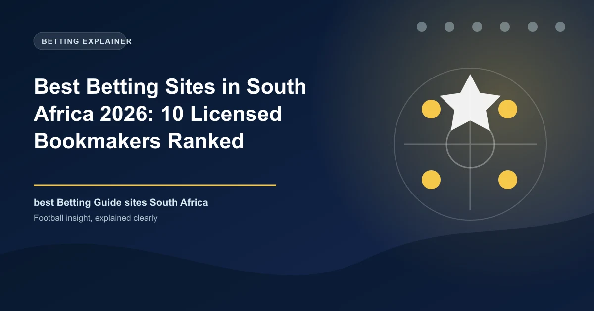

Best Betting Sites in South Africa 2026: 10 Licensed Bookmakers Ranked

South Africa has one of Africa's most mature and tightly regulated betting markets. Every bookmaker worth your rands must hold a provincial licence and complete FICA verification on your account before you can withdraw. Here are the ten we rate highest for 2026.

South African punters are spoiled for choice. Dozens of bookmakers compete for your rands, and the legal framework that governs them is genuinely strong: online betting has been lawful for licensed operators since the National Gambling Act of 2008, and every top-tier bookmaker now operates under the supervision of a provincial gambling board with national oversight from the National Gambling Board (NGB).
That regulation changes how you should choose a site. In South Africa, the licence in the footer matters more than the bonus in the banner, because a provincial licence gives you a real route for complaints and dispute resolution if a bookmaker misbehaves. An offshore Curacao site might offer a bigger headline number, but it leaves you with currency risk, slower payouts and no local regulator to turn to when something goes wrong.
This guide ranks the ten best South African bookmakers for 2026 based on our testing between January and May 2026, covering licensing, odds quality, market depth, bonuses, payouts and mobile performance on local networks.
South Africa Betting at a Glance
| Factor | Detail |
|---|---|
| Currency | South African Rand (ZAR / R) |
| Regulator | Provincial gambling boards, coordinated by the National Gambling Board (NGB) |
| Legal status | Legal for licensed bookmakers under the National Gambling Act 2008 |
| Verification | FICA (Financial Intelligence Centre Act) required before withdrawals |
| Tax on winnings | None for recreational bettors — tax is paid by the operator |
| Population | 62+ million |
| Most popular sports | Premier League, PSL, rugby, cricket, horse racing |
| Payment methods | Early instant EFT, Ozow, SnapScan, Capitec Pay, FNB eWallet, Visa/Mastercard |
Know the Rules: Provincial Licences and the NGB
South African gambling law has a layered structure. Each of the nine provinces operates its own gambling board, and a bookmaker licensed in one province can legally accept customers nationwide. The boards you will see most often are the Western Cape Gambling and Racing Board (which licenses the largest share of online operators, including Betway, Easybet and ZARbet), the Mpumalanga Economic Regulator (10Bet, Betfred, WSB) and the Gauteng Gambling Board (Bettabets, Tab4Racing).
Above them sits the NGB, which coordinates national policy and runs a verified-operators portal. The practical rule for punters is simple: scroll to the footer of any betting site, confirm it names a provincial board with a licence number, then cross-check the operator on the NGB portal. Sites like 1xBet, which operate only on a Curacao licence, are accessible from South Africa but are not locally regulated — you would have scant recourse through a provincial board if a dispute arose.
How We Ranked the Sites
We tested 20+ bookmakers available to South African punters between January and May 2026, scoring each across licensing and trust, odds margins on football and rugby, welcome-offer value and wagering fairness, payment methods and payout speed, and mobile performance on local networks. Bonus headline numbers were deliberately left out of the ranking until the wagering terms had been read.
The Top 10 Betting Sites in South Africa, Ranked
1. Betway — Best Overall
Betway remains South Africa's default bookmaker and the second-most-visited gambling site in the country. Licensed in the Western Cape, it combines a welcome match up to R2,000 on a friendlier 3x wagering, deep Premier League and PSL markets, and the most polished local mobile app (Android APK around 18MB, iOS and Huawei versions included). Payouts via early EFT and Ozow typically land within 4–24 hours.
- Welcome offer: first-deposit match up to R2,000 + daily SPMAX free-bet packs
- Wagering: 3x at minimum odds 1.75
- Sports: 30+ incl. PSL, Premier League, URC, cricket, horse racing
- Minimum deposit: R10
2. Easybet — Biggest Praise for Welcome Value
Easybet has spent 2026 topping independent rankings for welcome-offer value. Its headline bonus is a 150% first-deposit match up to R5,000 bundled with 100 free spins, subject to a 4x rollover that is achievable on football. The app is available on Android, iOS and Huawei, including a data-free version for lighter connections, and the operator holds licences in both the Western Cape and Eastern Cape.
- Welcome offer: 150% up to R5,000 + 100 free spins
- Wagering: 4x
- Strengths: biggest cash welcome, clean app, fast FICA
3. Hollywoodbets — Best for Horse Racing
Origin-par of South African racing, Hollywoodbets pairs a massive retail network with a strong online product. It is the natural home for horse racing punters with deep UK and SA racing coverage, plus solid soccer and rugby. The no-deposit-feeling R25 free bet and free spins welcome (6x wagering) is easy to understand, and the minimum deposit of R5 is the lowest among the big names.
- Welcome offer: R25 free bet + 50 free spins
- Best for: horse racing, retail integration, casual budgets
4. 10Bet — Best for Live In-Play
Licensed by the Mpumalanga Economic Regulator, 10Bet pairs a tiered welcome package up to R5,000 with some of the deepest live in-play coverage in the market, particularly on European football and tennis. It is also one of the few South African bookmakers to accept cryptocurrency deposits, which appeal to punters who want faster access to funds.
- Welcome offer: tiered package up to R5,000
- Wagering: 6x
- Deposits: EFT, Ozow, SnapScan, Visa/Mastercard, crypto
5. Supabets — Best Bonus Value Per Rand
Supabets consistently offers the best value for your first rands over several deposits. Its welcome builds to R3,050 across a deposit match and reload incentives at a fair 3x turnover, and daily prices on soccer and rugby are competitive with the majors. It is licensed in the Western Cape and a mainstay of local top-10 lists.
- Welcome offer: up to R3,050 across deposits
- Wagering: 3x
- Minimum deposit: R10
6. World Sports Betting — Racing Specialists
WSB is a South African institution for serious racing punters, offering high limits, well priced UK and local racing, and a strong retail presence. Online it pairs deep racing markets with good soccer coverage under a Mpumalanga licence. Loyalty rewards and consistent payouts keep long-term customers happy.
- Best for: horse racing, high limits, loyalty rewards
- Deposits: EFT, vouchers, bank transfer
7. Sportingbet — Widest Sports Range
Backed by the Entain Group and locally licensed, Sportingbet offers one of the widest sports menus in the country (37 sports) alongside strong live betting. Its welcome is a first-bet refund up to R1,000 at just 1x wagering — the most player-friendly bonus terms in this ranking.
- Welcome offer: first-bet refund up to R1,000
- Wagering: 1x
- Best for: sports variety and fair bonus terms
8. Betfred — Free-Spins Powerhouse
Betfred brings the biggest headline package in South African betting — up to R21,000 plus 750 free spins — across a tiered sports and casino bundle under its Mpumalanga licence. The full bundle is hard to unlock in practice, so value it as a free-spins play for casino fans more than as pure sports value.
- Welcome offer: up to R21,000 + 750 free spins (tiered)
- Wagering: 5x
- Best for: casino spins and racing variety
9. TicTacBets — Best for Beginners
TicTacBets keeps things refreshingly simple. Licensed in the Northern Cape, it offers a straightforward matching bonus up to R5,000, an uncluttered interface and easy navigation that suits first-time punters. It appears in every major independent list and is a strong starting point for new bettors.
- Welcome offer: match up to R5,000
- Best for: beginners and simple betting
10. ZARBet — Best Modern Platform
ZARBet rounds out the top ten with a fast, modern interface, a 100% first-deposit match and ongoing free-spins bundles, all under a Western Cape licence. It is a smaller brand but punches above its weight on usability and daily promotions, making it a solid secondary account.
- Welcome offer: 100% first-deposit match + free-spins bundle
- Best for: modern platform, daily promotions
Quick Comparison Table
| Site | Best For | Licence Board | Welcome Offer | Wagering | Min Deposit |
|---|---|---|---|---|---|
| Betway | Overall | Western Cape | Up to R2,000 match | 3x | R10 |
| Easybet | Largest bonus | Western/Eastern Cape | 150% up to R5,000 + 100 spins | 4x | R20 |
| Hollywoodbets | Horse racing | KZN origin, multi | R25 free bet + 50 spins | 6x | R5 |
| 10Bet | Live in-play | Mpumalanga | Up to R5,000 (tiered) | 6x | R20 |
| Supabets | Bonus value | Western Cape | Up to R3,050 | 3x | R10 |
| WSB | Racing limits | Mpumalanga | Match + spins | Varies | R20 |
| Sportingbet | Sports variety | Western Cape | First-bet refund R1,000 | 1x | R20 |
| Betfred | Free spins | Mpumalanga | R21,000 + 750 spins | 5x | R25 |
| TicTacBets | Beginners | Northern Cape | Up to R5,000 match | Varies | R10 |
| ZARBet | Modern platform | Western Cape | 100% match + spins | Varies | R10 |
What the Welcome Bonuses Really Mean
The headline number tells you little without the wagering terms. A 3x rollover at minimum odds of 1.75 (Betway) is dramatically easier to turn into cash than a 6x rollover (10Bet, Hollywoodbets). Betfred's headline R21,000 looks enormous until you read that it is spread across a tiered package with 5x turnover. The practical advice is the same across all ten sites: value the offer by the size of the bonus divided by its rollover, not by the banner. A refund offer with 1x wagering (Sportingbet) converts at nearly 100% value; a 150% match at 4x converts to roughly 35–40% of the headline under normal play.
Payment Methods: How South Africans Deposit and Withdraw
ZAR-denominated betting is a genuine advantage of locally licensed sites — no currency conversion, no conversion fees. The most common payment rails in 2026 are:
| Method | Typical Speed | Notes |
|---|---|---|
| Early instant EFT | Instant deposits, 4–24h payouts | Supported by all major banks (FNB, Capitec, Absa, Nedbank, Standard) |
| Ozow | Near-instant | Interbank payment without card details |
| SnapScan | Instant | App-based scanning |
| Capitec Pay / FNB eWallet | Instant | Popular with mobile-first punters |
| Visa / Mastercard | Instant deposits | Card withdrawals rarer; EFT preferred |
| Cryptocurrency (10Bet etc.) | Minutes | Niche but growing |
Remember that FICA verification must be complete before your first withdrawal regardless of method. Payouts to your registered South African bank account or eWallet carrier are tax-free for recreational bettors — the bookmaker, not you, carries the gambling tax burden.
Mobile Apps on South African Networks
Most South African betting now happens on phones, and the big names have built for 4G reality. Betway's Android APK is around 18MB with biometric login and Win Boost on multis. Easybet offers a data-free version of its app, a genuine edge for punters on limited plans. Hollywoodbets and Supabets ship reliable, lightweight apps, while 10Bet's app leans into live betting with fast odds updates. All support early EFT and Ozow inside the app, so you can deposit without leaving the cashier.
Best Sites by Feature
| If You Want... | Top Choice | Runner-Up |
|---|---|---|
| Best overall | Betway | Easybet |
| Largest cash bonus | Easybet (R5,000) | Supabets |
| Horse racing | Hollywoodbets | WSB |
| Live in-play depth | 10Bet | Sportingbet |
| Beginners | TicTacBets | Sportingbet |
| Fastest payouts | Betway (4–24h EFT) | Hollywoodbets |
| Lowest minimum deposit | Hollywoodbets (R5) | Betway / ZARBet (R10) |
How to Choose Your South African Betting Site
If you mostly bet Premier League and PSL football, Betway or Easybet covers you well. Racing punters should start with Hollywoodbets and add WSB for limits and loyalty. Live traders get the deepest markets at 10Bet or Sportingbet. Finally, open accounts at two or three licensed sites and shop the line on your regular markets — the same match can differ by 3–5% in margin between operators, and that gap pays for itself across a season of football bets.
Responsible Gambling in South Africa
Every licensed operator must offer deposit limits, time-outs and self-exclusion, and the NGB runs a national self-exclusion register. If gambling stops being fun, the National Responsible Gambling Programme offers free counselling on 0800 006 008. Only bet what you can afford to lose, and never chase losses by raising stakes.
Frequently Asked Questions
Is online betting legal in South Africa?
Yes, when you use a bookmaker licensed by a provincial gambling board. Sports and horse-racing betting have been legal for licensed operators since the National Gambling Act 2008. Sites like 1xBet that hold only a Curacao licence are accessible but not locally regulated.
Which is the best betting site in South Africa?
Betway is the strongest all-round package for 2026, with provincial licensing, a fair 3x wagering bonus, deep Premier League and PSL markets and fast EFT payouts. Easybet is the best pick if the largest cash welcome bonus matters most.
Do I pay tax on betting winnings in South Africa?
No. Recreational betting winnings are not taxable. The bookmaker carries the gambling tax burden, so the money you withdraw to your bank is yours in full.
How quickly can I withdraw from South African betting sites?
After FICA verification, EFT and Ozow payouts typically arrive within 4 to 24 hours at Betway and Hollywoodbets, up to 48 hours at others. Crypto withdrawals at 10Bet can land in minutes.
What is FICA and why does it matter?
FICA is the Financial Intelligence Centre Act, which requires bookmakers to verify your identity and address before paying withdrawals. Prepare your South African ID or passport and proof of address to avoid delays.
Put These Principles Into Practice Today
Every strategy on this page is only as good as the markets you apply it to. Check the latest predictions, odds, and in-play opportunities below.
Last updated: August 2026 | By Tochukwu Mesigo |
Build Winning Accumulator Tickets
Generate optimized accumulator combinations from today's data-driven predictions. Set your target odds and get instant ticket suggestions.
Pro Ticket Builder →